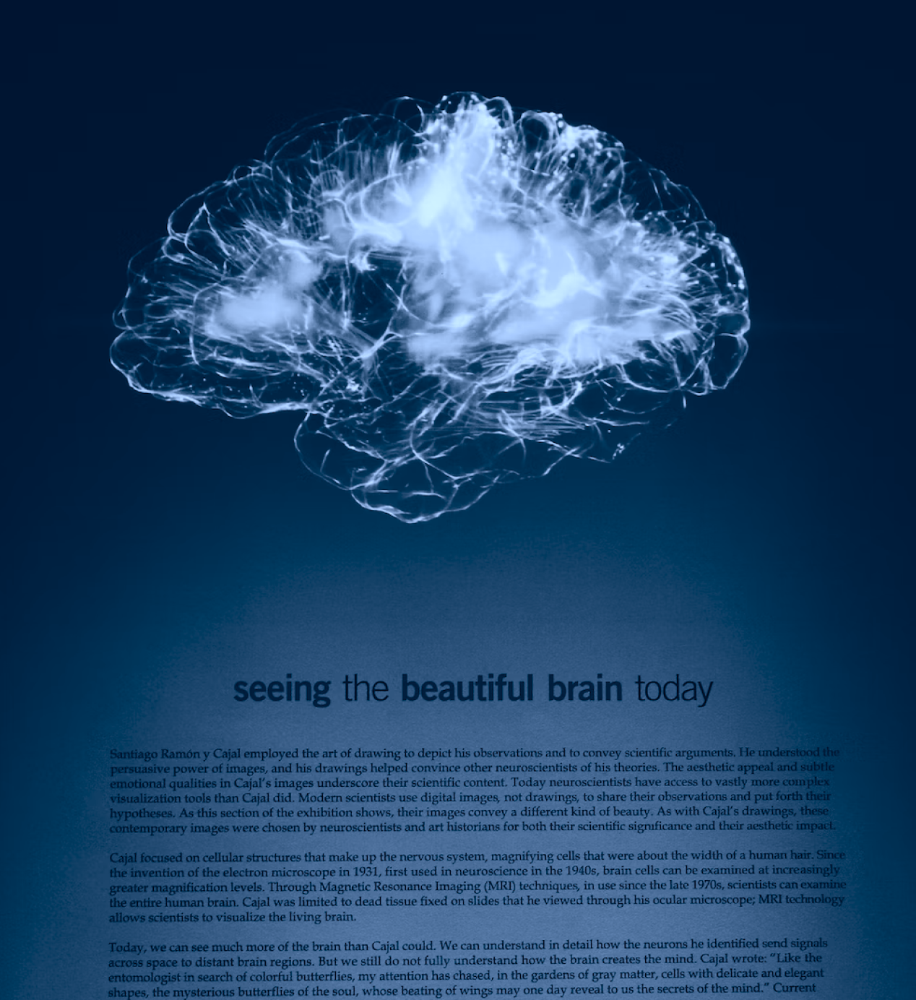

The philosophy of artificial intelligence is a branch of the philosophy of technology that explores artificial intelligence and its implications for knowledge and understanding of intelligence, ethics, consciousness, epistemology, and free will. Furthermore, the technology is concerned with the creation of artificial animals or artificial people so the discipline is of considerable interest to philosophers. These factors contributed to the emergence of the philosophy of artificial intelligence. Some scholars argue that the AI community's dismissal of philosophy is detrimental, hence this website will be exploring the role of philosophy in artificial intelligence
Philosophically, the main AI question is “Can there be such?” or, as Alan Turing put it, “Can a machine think?” What makes this a philosophical and not just a scientific and technical question is the scientific recalcitrance of the concept of intelligence or thought and its moral, religious, and legal significance. In European and other traditions, moral and legal standing depend not just on what is outwardly done but also on inward states of mind. Only rational individuals have standing as moral agents and status as moral patients subject to certain harms, such as being betrayed. Only sentient individuals are subject to certain other harms, such as pain and suffering. Since computers give every outward appearance of performing intellectual tasks, the question arises: “Are they really thinking?” And if they are really thinking, are they not, then, owed similar rights to rational human beings? Many fictional explorations of AI in literature and film explore these very questions.
Theory of Mind is a term from psychology about an individual's capacity for empathy and understanding of others. This is an awareness of others being like yourself, with individual needs and intentions. One of the abilities language users have, is to communicate about things that are not concrete, like needs, ideas, or concepts. In psychology, "Theory of Mind" means that people have thoughts, feelings and emotions that affect their behavior. Future AI systems must learn to understand that everyone (both people and AI objects) have thoughts and feelings. Future AI systems must know how to adjust their behavior to be able to walk among us. The last step, before AI can be human, is machine consciousness.
Although experts disagree over what exactly constitutes intelligence, natural or otherwise, most accept that, sooner or later, computers will achieve what is termed artificial general intelligence (AGI) in the lingo. Artificial general intelligence (AGI) is the ability of an intelligent agent to understand or learn any intellectual task that a human being can. Various criteria for intelligence have been proposed (most famously the Turing test) but to date, there is no definition that satisfies everyone. However, there is wide agreement among artificial intelligence researchers that intelligence is required to do the following: reason, represent, plan, learn, and communicate.
Can a machine have a mind, consciousness, and mental states? Accoroding to philosophers, neuroscientists and cognitive scientists, consciousness refers to the familiar, everyday experience of having a "thought in your head", like a perception, a dream, an intention or a plan, and to the way we see something, know something, mean something or understand something. Some arguments that a computer cannot have a mind and mental include Searle's Chinese room, Leibniz' mill, and Davis's telephone exchange.
Can a machine have a mind, consciousness, and mental states? Accoroding to philosophers, neuroscientists and cognitive scientists, consciousness refers to the familiar, everyday experience of having a "thought in your head", like a perception, a dream, an intention or a plan, and to the way we see something, know something, mean something or understand something. Some arguments that a computer cannot have a mind and mental include Searle's Chinese room, Leibniz' mill, and Davis's telephone exchange.
There’s no universal definition of creativity, just as there’s no universal definition of love, but we all know it when we see it. So can a computer know creativity? More importantly, can we teach a computer to be creative? Recent advancements in AI seem to suggest that the answers are a resounding “yes.” No human is born with abilities like writing, drawing, or singing—they’re skills we develop by observing and acting upon data, which we call “learning.” Similarly, AI can observe and learn from data to gain creative skills like drawing, musical composition, and writing.
Emotion AI is a subset of artificial intelligence (the broad term for machines replicating the way humans think) that measures, understands, simulates, and reacts to human emotions. It’s also known as affective computing, or artificial emotional intelligence. The field dates back to at least 1995, when MIT Media lab professor Rosalind Picard published “Affective Computing.” AI and neuroscience researchers agree that current forms of AI cannot have their own emotions, but they can mimic emotion, such as empathy. Synthetic speech also helps reduce the robotic like tone many of these services operate with and emit more realistic emotion.